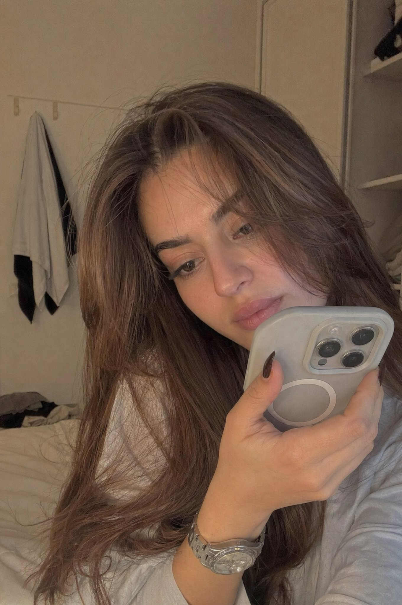

AI人像摄影提示词
Realistic Candid Bedroom Recording Portrait
这是一个可参考的 AI 生图提示词案例，适合回到 LOAT 生成器中按主体、风格、比例和用途继续改写。
案例信息
分类：AI人像摄影提示词
图片尺寸：1360 × 2048
作者/来源：ChillaiKalan__ · 来源链接
提示词
A realistic young woman sitting casually in a softly lit bedroom during late afternoon. She is holding her phone very close to her face as if recording a private video or voice note. Framing is tight and slightly imperfect. Expression: thoughtful, slightly shy, natural. Minimal makeup, natural skin texture, relaxed clothing. Lighting: warm natural light fading from a window, soft shadows. Environment: simple bedroom, calm and lived-in. Style: ultra-realistic, looks like a real phone recording, slightly grainy, not cinematic.
改写建议
替换主体
保留构图和风格，替换人物、产品、场景或品牌元素。
调整比例
头像可改为 1:1，短视频封面可改为 9:16，横幅可改为 16:9。
减少不确定词
如果结果不稳定，减少过多形容词，优先写清主体、光线和用途。